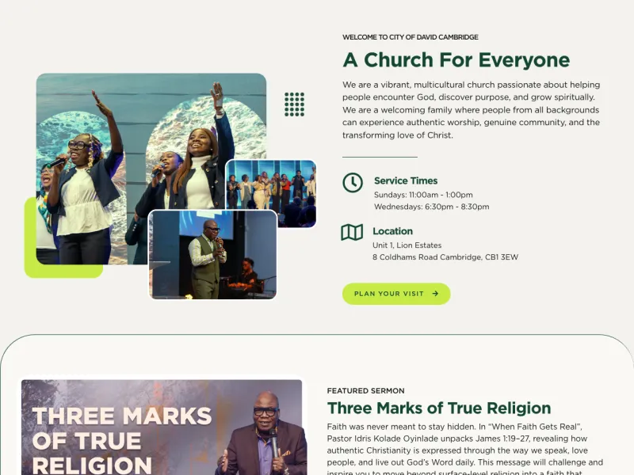
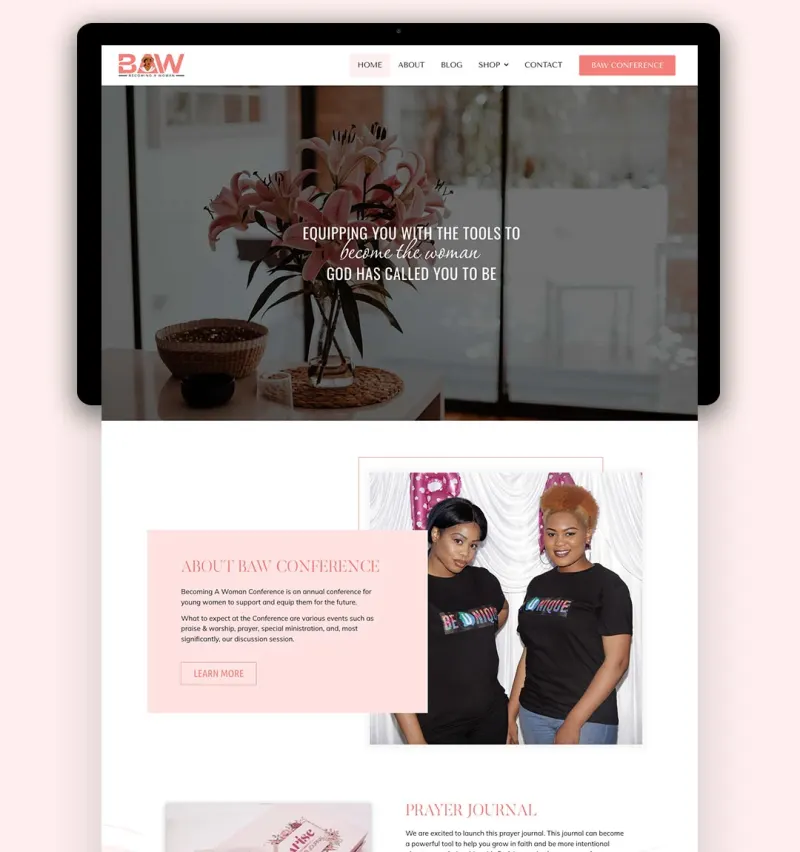
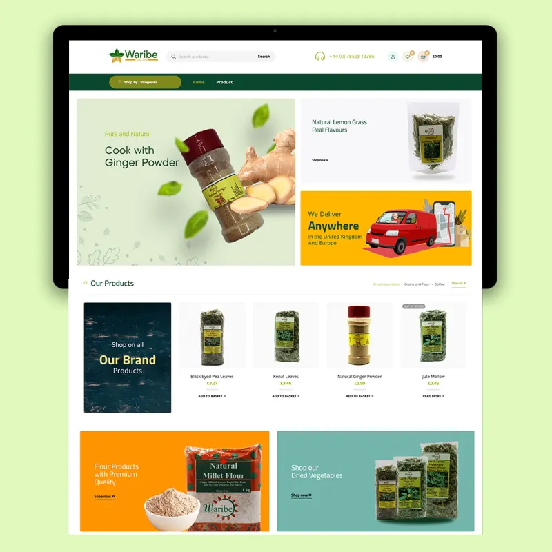
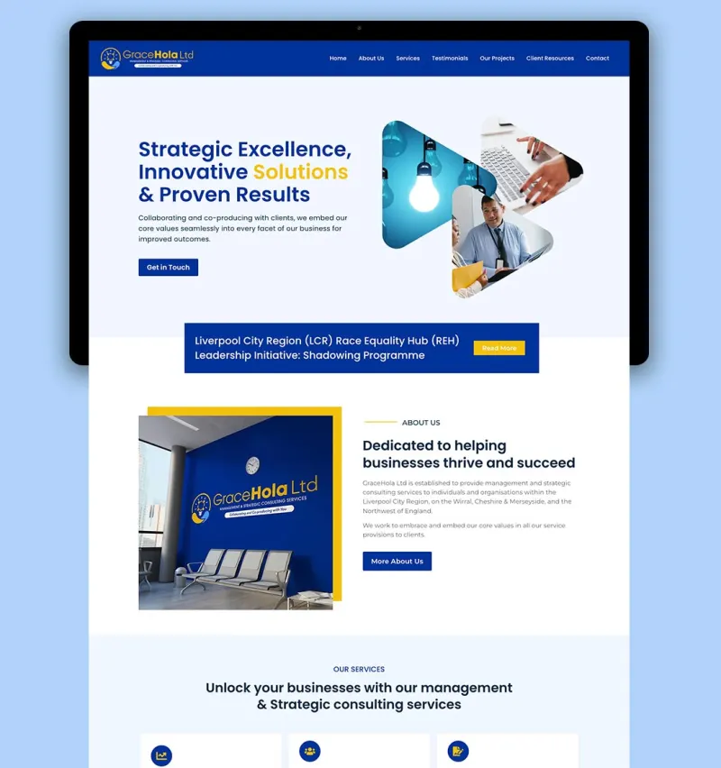

Video & Visual
Video editing, multicam workflows and colour correction/grading in DaVinci Resolve, Adobe Premiere Pro and Final Cut Pro, with a careful eye for visual quality.
Video Editor Web & UI Designer AI Evaluation & Research
Creative technologist with an engineering background, working across visual, digital and AI-assisted workflows.
Three areas I work across
Video editing, multicam workflows and colour correction/grading in DaVinci Resolve, Adobe Premiere Pro and Final Cut Pro, with a careful eye for visual quality.
Responsive websites and interfaces built with WordPress and Elementor, designed in Figma, with hand-coded HTML, CSS and Bootstrap where needed.
AI-assisted research, prompt design, output review, fact-checking and structured reasoning across multi-step workflows. I use AI and agentic tools to research, test ideas, review results and refine instructions.
Selected projects across web, design and digital media

Church website for events, sermons, forms and digital content.
Web/UI design & website management. Redesigned and continue to maintain the site, including responsive pages, reusable templates, events, sermons, forms and content systems.

Website for the Becoming a Woman conference.
Designed, built and continue to maintain the website.

Website for Waribe.
Designed and built the website.

Website for GraceHola Consulting.
Designed, built and continue to maintain the website.
More code and learning projects on GitHub (opens in a new tab).
I'm a creative technologist with a BEng (Hons) in Computer & Electronics Engineering. That training gives me a structured, detail-first way of working, which I apply to creative and digital projects.
I run Ichaniel Studios, where I work as a designer and video editor, and I serve as Creative Director / Media Director at RCCG City of David Cambridge, coordinating video, live broadcast, graphics and web content.
I also use AI and agentic tools across research, creative and technical workflows, including prompt design, output review, fact-checking, result verification and refining instructions. I'm developing this further towards AI evaluation and training work.
Where I've applied these skills
April 2016 – Present
Ichaniel Studios
July 2016 – Present
RCCG City of David Cambridge
Aug 2019 – Present
Research and verify information across multiple systems, analyse complex customer issues and communicate clear outcomes while following detailed processes in a remote environment.
The tools and methods I use across video, design, web and AI-assisted work
Have a project, role or collaboration in mind? I’d be happy to hear from you.